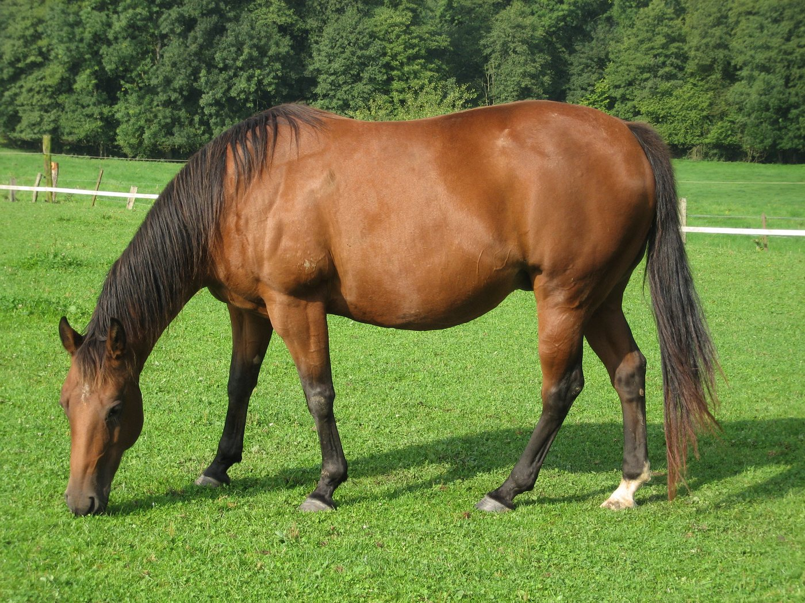
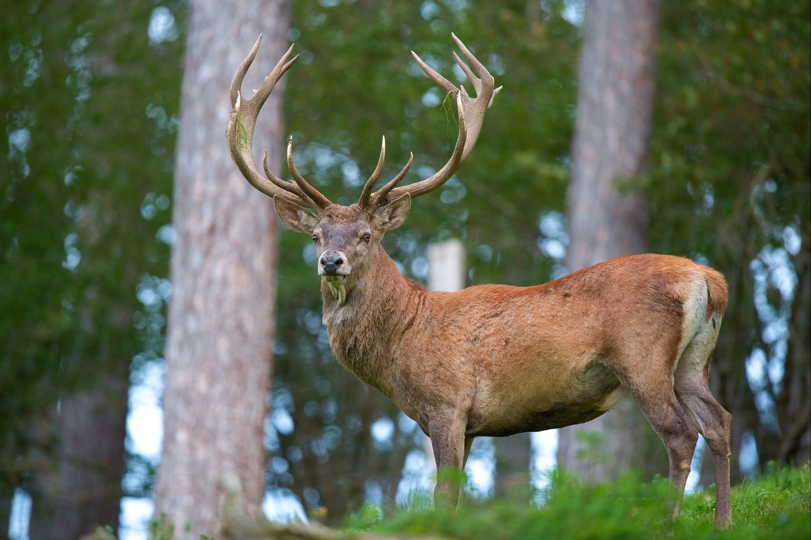
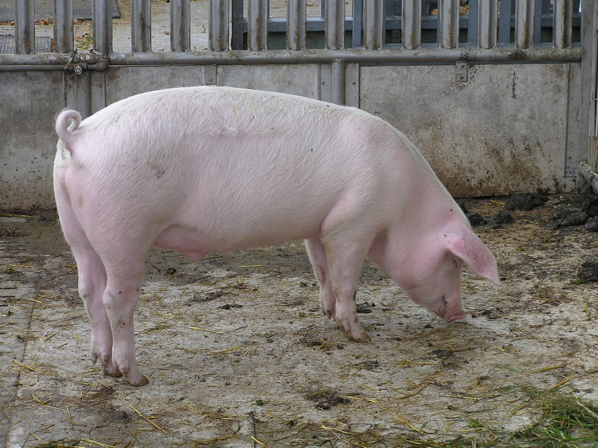
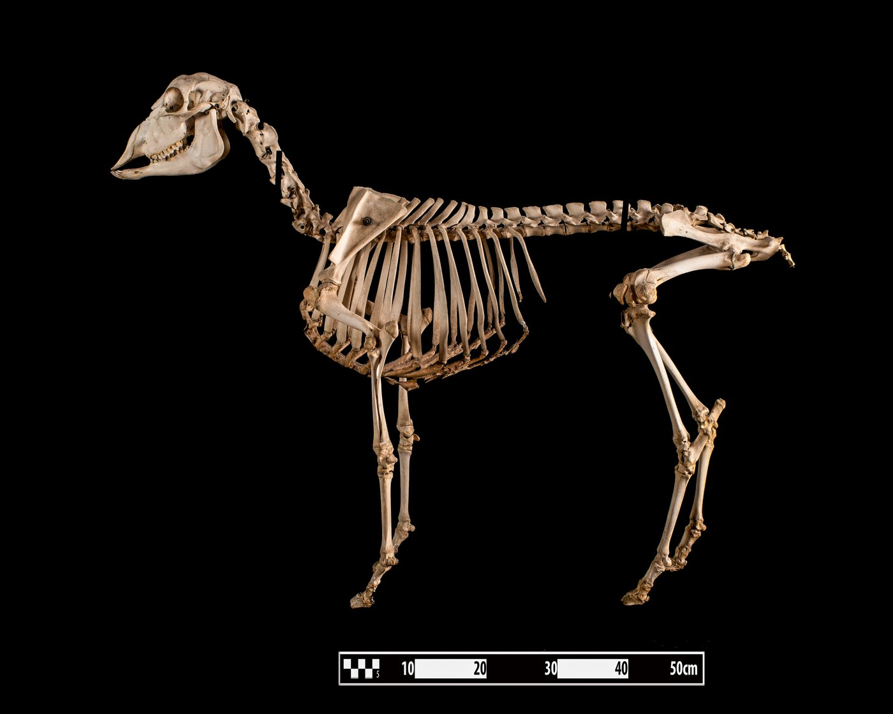
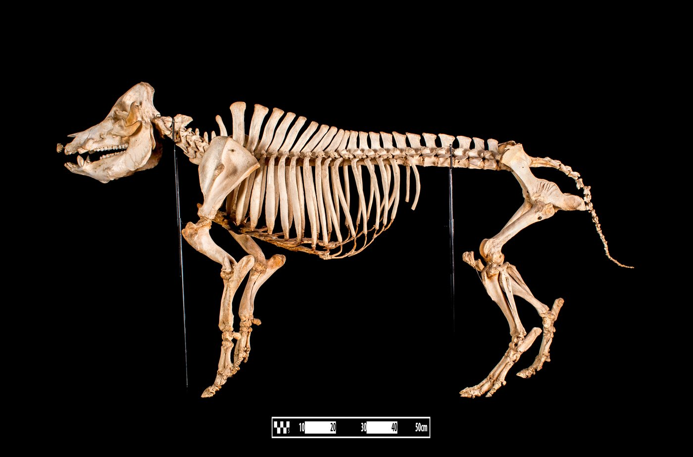
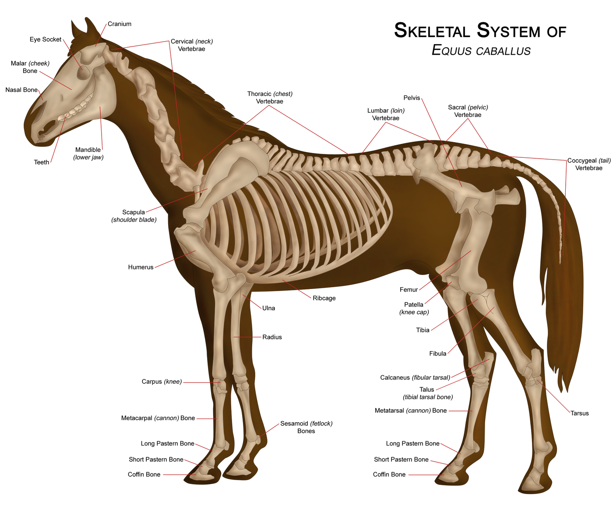
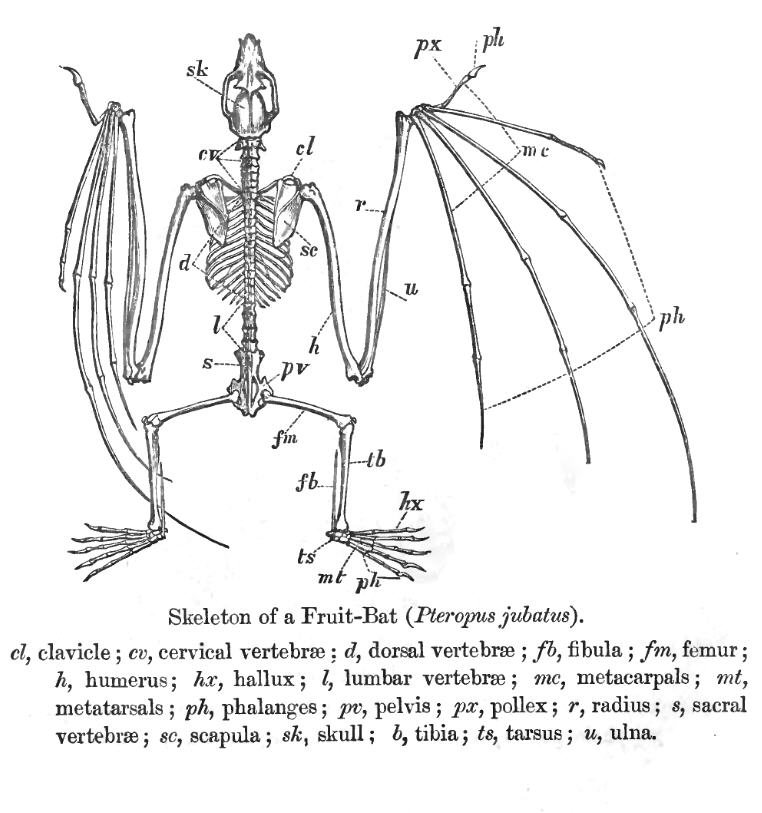

Cheval : carte animal, pas preuve d'identification.
evelynbelgium, CC BY-SA 2.0, via Wikimedia Commons.
Activité 2 · Support images
Images pour projection ou impression. Les crédits doivent rester visibles.

Cheval : carte animal, pas preuve d'identification.
evelynbelgium, CC BY-SA 2.0, via Wikimedia Commons.

Mouton domestique : petit ruminant, support de comparaison.
Fernando Losada Rodríguez, CC BY-SA 4.0, via Wikimedia Commons.

Cerf élaphe : exemple de cervidé, sans généralisation.
Luc Viatour, CC BY-SA 3.0, via Wikimedia Commons.

Cochon domestique : support de comparaison.
Joshua Lutz, domaine public, via Wikimedia Commons.

Pied de mouton annoté : chercher la région du tarse.
Caroline Eroline, CC BY-SA 4.0, via Wikimedia Commons.

Squelette de mouton : replacer le pied dans l'ensemble du membre.
Museum of Veterinary Anatomy FMVZ USP / Wagner Souza e Silva, CC BY-SA 4.0, via Wikimedia Commons.

Squelette de porc : support adulte, pas carte-réponse.
Museum of Veterinary Anatomy FMVZ USP / Wagner Souza e Silva, CC BY-SA 4.0, via Wikimedia Commons.

Cheval : schéma avec labels anglais, à guider par l'adulte.
WikipedianProlific, CC BY-SA 3.0/GFDL, via Wikimedia Commons.

Chauve-souris : prolongement pour montrer que tous les mammifères ne sont pas adaptés au même jeu de comparaison.
British Museum, domaine public, via Wikimedia Commons.